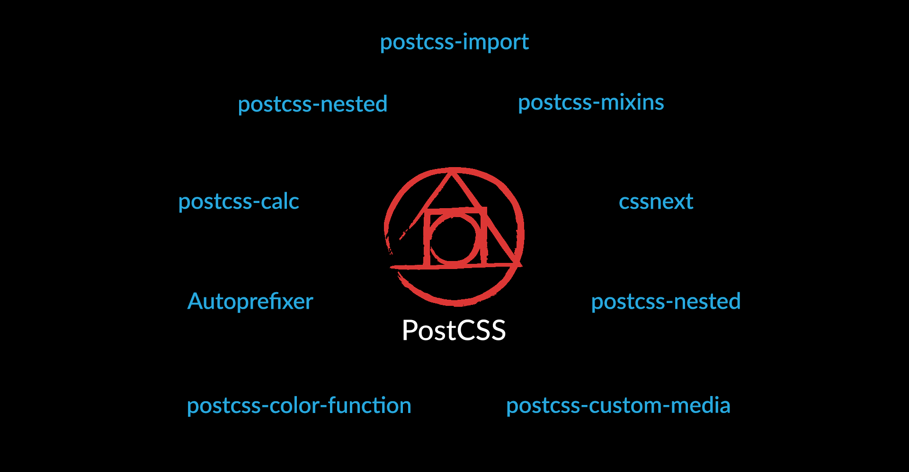
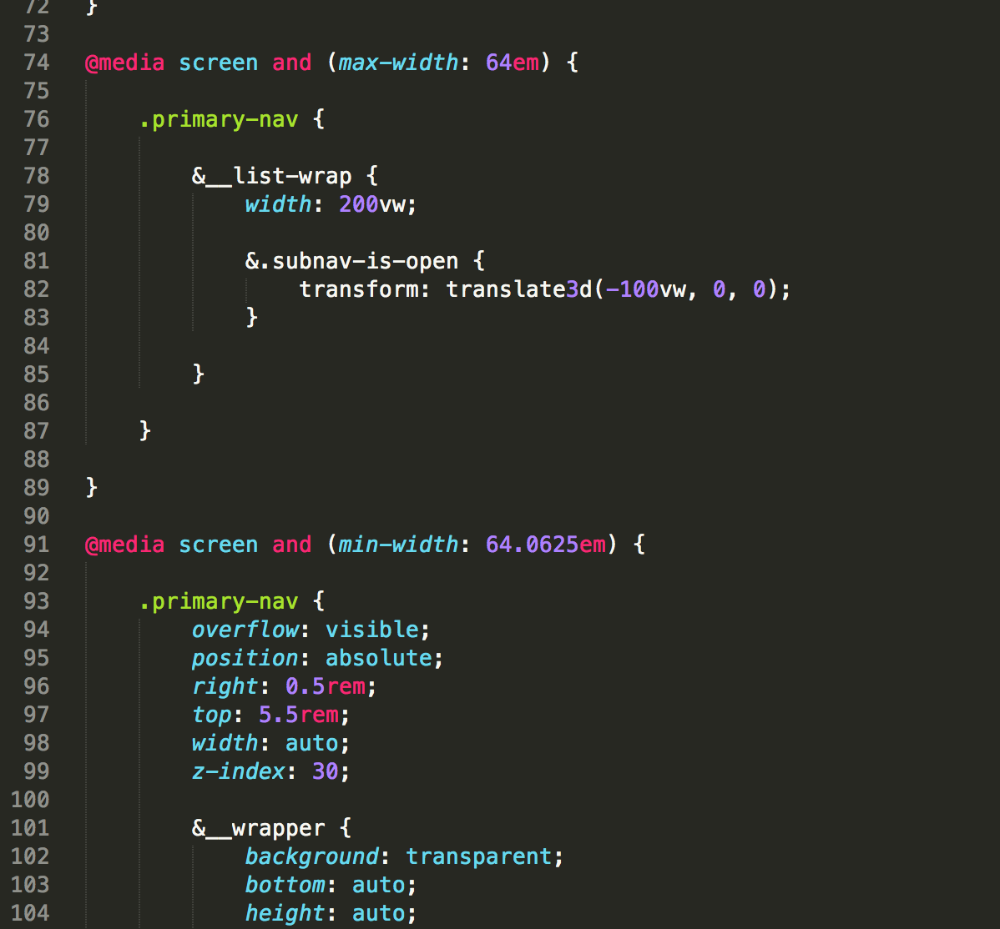

Kicking Sass
How to Write CSS in a PostCSS World
Aaron Ladage / aladage@degdigital.com / @aladage
#kicksass
Aaron Ladage
- UI Engineer
- DEG, Kansas City
Can we get back
to basics?
(Spoiler alert: we did.)
Today's Agenda:
- Project GitHub repository walkthrough
- Explain postprocessors (CSS) and transpilers (JS)
- Workshop:
- PostCSS
- ES6/Babel
- System.js/JSPM
- Questions
GitHub Repo: bit.ly/1LXTrZZ
Slides: bit.ly/1LXTuVq
Project GitHub Repo:
Software Requirements
- Git
- Node.js
Software Requirements
Also, make sure you have:
- A web browser (preferably Chrome)
- A text editor
- A terminal
- Admin rights to your computer
Understanding the Git branches
- step1: Start with this branch. CSS is written in Sass, and JavaScript uses jQuery with no script loader or ES6 transpiler.
- step2: Sass removed, and PostCSS added.
- step3: jQuery removed, and Babel added.
- step4: Final branch. Babel removed, and System.js and JSPM added.
Understanding the Git branches
Each branch also includes:
- A rough outline of how to complete that branch's steps.
- A "sample_workshop_files" directory that contains all of the next branch's code (but try not to peek).
Watch for the stop signs!
- If you get lost, this is a good time to check out the next branch.
- Also a good time to get help with issues/questions.
- And go to the restroom. Please.
We all fell in love with front-end code.
Some of us just don't like it that much anymore.
CSS is amazing!
CSS is amazing?
CSS is. Amazing.
WTF, JS?
WTF, JS?
"CSS is not a real
programming language!"
"JavaScript is a toy language!"
They weren't wrong.
(But they're getting less right every day.)
Problems with CSS
- Cross-browser compatibility issues
- Vendor prefixes
- No variables
- No inline importing
- No nested selectors
- No functions/mixins
- No color manipulation
- No basic arithmetic
Problems with JavaScript
In the browser:
- Messy syntax
- Cross-brower compatibility issues
- Difficult DOM traversal
- Difficulty with effects/animation
Problems with JavaScript
Within the language itself:
- No module-loading system
- No interpolation/template strings
- No fat arrow functions
- No default function arguments
- No class-based inheritance (I guess?)
- No constansts
- No destructuring
Developers have been filling in the gaps in CSS and JavaScript for years.
Preprocessors became the solution.
…and a pretty good one at the time, too.
CSS:
JavaScript:
Typical Preprocessor Workflow:
Typical Preprocessor Workflow:
Typical Preprocessor Workflow:
Typical Preprocessor Workflow:
Typical Preprocessor Workflow:
Coffeescript:
This:
for num in [1..10]
if num % 2 == 0
console.log "#{num} is even"
else
console.log "#{num} is odd"Compiles to this:
var num, _i;
for (num = _i = 1; _i <= 10; num = ++_i) {
if (num % 2 === 0) {
console.log("" + num + " is even");
} else {
console.log("" + num + " is odd");
}
}On the JavaScript library front:
Querying the DOM for an element in vanilla JS…
var el = document.getElementById("myContainer");…became this with jQuery:
var el = $("#myContainer");But preprocessors
perpetuate a problem.
(Say that five times fast.)
We're putting more and more layers of
abstraction between the code we write
and the code the browser can read.
Preprocessors are their own programming languages
- Proprietary syntax
- Often written in "non-web" languages
- "All or nothing" approach
- Not as easily extensible
- Must be compiled, today and forever
- Browsers are catching up
- Compile times can be slow
What's so bad about jQuery?
- A tool for web developers, not web users.
- DOM traversal isn't that hard with vanilla JS. No, really.
- IE10/11 have eliminated most cross-browser compatibility issues.
- CSS3 is better suited for transitions and animations.
- Dependencies suck.
- Performance matters.
- Impress your friends with your library-less street cred!
Libraries Vs. Languages
What are new developers learning?
"The New Normal"

"I thought L,M,N,O was a single letter, called elameno. Sort of like double-u."
"My dad once told me ponies were horses that lied, so they shrank. Made me not want to go on a pony ride. Didn't want to hang out with lying horses."
"My dad told me to make sure I fully dry off after a shower before walking to my room, otherwise I'd catch a draft. I swear he said 'catch a giraffe' so for weeks after, I could be caught running naked from the bathroom to my bedroom, dripping wet. Never caught that damn giraffe."
There's got to be a better way!

Goodbye, preprocessors
Hello, postprocessors
Before you ask…
Yes, postprocessors are still preprocessors.
It's not about when you're processing.
It's about what you're processing.
"Transpiler" might be more accurate.
That's the preferred term on the JavaScript side.
CSS Postprocessor:
JS Transpilers:
Our preprocessor process:
Our new postprocessor process:
Our new postprocessor process:
Our new postprocessor process:
Our new postprocessor process:
Our new postprocessor process:
Unlike Sass, PostCSS is modular.
Sass gives you everything,
whether you need it or not.
PostCSS empowers you
to make your own choices.
PostCSS advantages:
- Write your CSS using CSS (what a concept!).
- Use CSS3 with reckless abandon.
- Hell, use CSS4. Who cares if that's not actually a thing?
- Works with your existing task runners
- Built on Node!
- No more Ruby dependencies!
- Easier to debug
- Write your own plugins in nothing but JavaScript.
- Faster compile times (40x faster than Ruby Sass / 4x faster than LibSass…allegedly).
- Countless plugins
Someday, we may even be able to
turn off our transpilers, and our
next-gen code will "just work."
…but let's not kid ourselves.
So, how do you get started?
It's possible you already have.
Autoprefixer

Autoprefixer
- Popular replacement for Compass's vendor prefix mixins.
- Automatically adds prefixes to CSS3 properties.
- Define browser support via config file.
- Cross-references caniuse.com database.
- No need to memorize special function names!
Part of the much larger
PostCSS ecosystem:

postcss.parts
Don't. Freak. Out.
Believe it or not, there is life after Sass.
If you can do it with Sass, you
can probably do it with PostCSS.
Partials/Globbing
Partials/Globbing
- postcss-import for partials.
- grunt-sass-globbing works fine with PostCSS.
Nested Selectors
Nested Selectors
- postcss-nested
- Proposed standard still in Editor's Draft
Just like Sass, remember to
use nesting sparingly.
.just {
.because {
.you {
.can {
.doesnt {
.mean {
.you {
.should {
}
}
}
}
}
}
}
}Variables
postcss-custom-properties: a great opportunity to start following the (HIDEOUS) CSS custom properties syntax:
:root {
--color-blue: #0082c2;
}
.element {
background-color: var(--color-blue);
}Variables
- Yes, it's ugly.
- But, it will someday be the standard, and allow for component-scoped variables.
- Already supported natively in Firefox
- Or, use postcss-simple-vars for Sass-style variables instead.
Color
- Like variables, you can follow the proposed CSS color module spec…and it's also ugly.
- Work in RGBA, hex, HSL, HSV or HWB.
- Use postcss-color.
Color
Color
Color
Color
Color

Mixins/Extends
- Sass wins this one.
- Use postcss-mixins. For basic arithmetic, use postcss-calc.
- Ask yourself: how complex are your mixins? Is that a good thing?
What about JavaScript?
EcmaScript 6 has been approved!!!
Remember this list?
- No module-loading system
- No interpolation/template strings
- No fat arrow functions
- No default function arguments
- No classes
- No constants
- No destructuring
ES6 fixes these issues, and we can use it today.
Write ES6 code like this:
import widgetBuilder from "modules/widgetBuilder";
const DEFAULT_TEXT = "This is some default text that won't change.";
let exampleFn = function() {
let tmplStr = `This is amazing!
it's a multiline string!
Our default text is ${DEFAULT_TEXT}`
};
export default exampleFn;Babel transpiles your code into this:
"use strict";
Object.defineProperty(exports, "__esModule", {
value: true
});
function _interopRequireDefault(obj) { return obj && obj.__esModule ? obj : { "default": obj }; }
var _modulesWidgetBuilder = require("modules/widgetBuilder");
var _modulesWidgetBuilder2 = _interopRequireDefault(_modulesWidgetBuilder);
var DEFAULT_TEXT = "This is some default text that won't change.";
var exampleFn = function exampleFn() {
var tmplStr = "This is amazing!\n it's a multiline string!\n Our default text is " + DEFAULT_TEXT;
};
exports["default"] = exampleFn;
module.exports = exports["default"];JavaScript modules are now a reality.
Unfortunately, JS module loading is not.
JS loaders:
Common, AMD, System, UMD
System.js:
- Built on top of the ES6 Module Loader polyfill.
- ~15KB minified and gzipped, runs in IE8+ and NodeJS.
- Loads practically any module format.
- Works flawlessly with its companion project, JSPM
JSPM:
- Package manager for System.js
- Install from any registry, including NPM and GitHub
- During development, transpiles in the browser at runtime.
- For production, outputs transpiled bundles.
In this workshop, we will:
- Convert Sass to PostCSS.
- Convert jQuery to vanilla JS written in ES6, via Babel.
- Use system.js and JSPM to manage and load our modules.
- Rejoice.
It's time to fall in love with
real code all over again.
Make sure you're on
the step1 branch now.
#kicksass
Convert Sass
to PostCSS
If you're lost, check out
the step2 branch now.
#kicksass
Convert jQuery to vanilla JS written in ES6, via Babel.
If you're lost, check out
the step3 branch now.
#kicksass
Use system.js and JSPM to manage and load our modules.
We're done! If you got lost,
check out the step4 branch
to see the final code.
#kicksass
Thanks for listening.
- Slides: http://bit.ly/1LXTuVq
- Resources: http://bit.ly/1QU5jMK
- Twitter: https://twitter.com/aladage